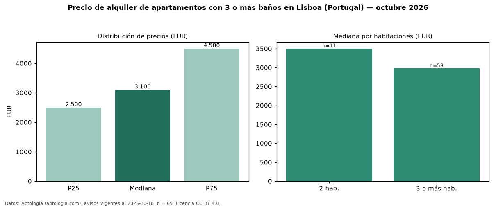

Precio de alquiler de apartamentos con 3 o más baños en Lisboa (Portugal) — octubre 2026
EUR 3.100 al mes es el canon mediano de apartamentos con 3 o más baños en alquiler en Lisboa (Portugal) (n = 69 avisos). Frente a la mediana de todos los apartamentos en alquiler de Lisboa (EUR 1.900, n = 500), queda 63 % por encima; este segmento reúne el 14 % de esos avisos. Por metro cuadrado, la mediana es EUR 21,53/m² al mes (n = 66), 6 % por debajo del conjunto de referencia (EUR 22,94/m²). El área mediana anunciada es 142 m². El segmento con más oferta es el de 3 o más habitaciones (58 avisos, mediana EUR 2.975); pasar de 2 habitaciones a 3 o más habitaciones cambia la mediana −15 %. La mitad central de los avisos va de EUR 2.500 a EUR 4.500 (razón 1,8), una dispersión moderada. 81 % de los avisos con el dato declara estacionamiento o cochera. Datos: Aptología (aptologia.com), CC BY 4.0 — https://www.aptologia.com/pt/arrendamento/lisboa. Archivos: PDF, CSV con las cifras y gráfica PNG.

| Avisos únicos | 69 |
|---|---|
| Percentil 25 | COP 2.500 |
| Mediana | COP 3.100 |
| Percentil 75 | COP 4.500 |
| Mediana por m² | COP 21 |
Fuente: avisos vigentes de portales inmobiliarios recopilados por Aptología, deduplicados (mínimo 30 avisos únicos por celda). Precios pedidos, no cerrados. Fecha: 2026-10-18.